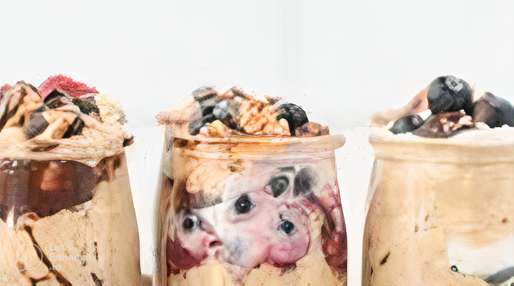

Protein overnight oats

Description:
This is a simple, cool and refreshing oatmeal. This simple breakfast packs over 20g of protein per serving.
It's a perfect option during summer months, when is too hot for warm oatmeal
Ingredients:
- 1/2 cup old fashioned oats. (DO NOT use quick/instant oats)
- 3/4 Unsweetened vanilla almond milk. (or any type of milk)
- 1-2 scoops vanilla protein powder. (25g total)
- 1/2 tablespoon chia seeds.
- 1/2 tablespoon vanilla extract.
- 1/4 teaspoon cinnamon.
- Optional toppings- berries, sliced almonds and almond butter.
Steps:
- Prep oats: combine all ingredients except the toppings in a small container.
- Soak: cover container with a lid and place in the fridge overnight (or at least 1-2 hours).
- Stir: Bring out of the fridge in the morning and stir. You'll notice that the protein powder, oats and chia seeds
soak up a lot of the liquid so you may want to add a little more almond milk or water before serving.
- Add toppings and enjoy: top with toppings of your choice and enjoy.
Macros:
- 338 calories, 28g protein, 33g carbs, 8g fiber, 9g fat
Return to Homepage